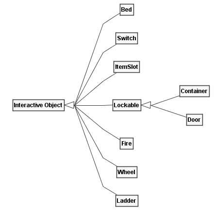
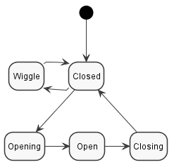

Interactive Object (Mob)
As far as I'm aware, nobody knows why objects characters can interact with are called Mobs or Mobsies. I have been told not even actual Piranha Bytes employees know! Anyways, Fig. 1 shows a complete list of all interactive objects in Gothic.

Fig. 1: Subclasses of the _Interactive Object class (Mob)._
Mobs are built upon the same animation state machine system as used by
NPCs. Rather than having states named Running Forward and transitions
like Standing -> Running Forward, they often use a simpler numbering
scheme. Lets look at the Chest in Fig. 2 to give an example.

Fig. 2: The two states of a Chest, Closed (a) and Open
(b).
For the chest, the following animations are defined:
S_S0(Closed)S_S1(Open)T_S0_2_S1(Transition Closed to Open)T_S1_2_S0(Transition Open to Closed)T_S0_TRY(No key, lid is wiggling)
This produces the statemachine shown in Fig. 3.

Fig. 3: All possible states a Chest can have.
The trick that makes this all work is that the Characters have a similar set of animations! There is one for each state and each transition, for every Mob even! If the Mob goes into a state, the Character follows. Such an animation is shown in Fig. 4, which is where the Character kicks the chest because it does not open, which causes its lid to wiggle.

Fig. 4: Animation named T_CHESTBIG_S0_TRY, matching the wiggling
lid of the chest.
Note
This state-scheme is why in Gothic 1 you have to specifically press the Forward-Button to open Chests or use Mobs in general. Pressing Forward and Backward cycles through the state numbers! It is also possible to branch to different sub-states using the Left and Right keys, but that is rarely used.
Gothic 2 automates this process for some Mobs.